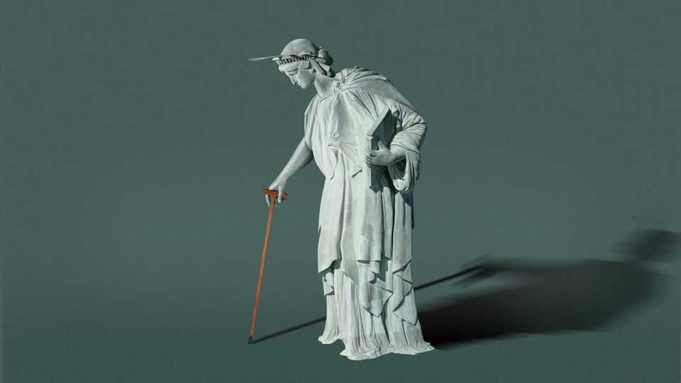

Is America becoming a gerontocracy?
A new book spots a real problem and offers terrible solutions
June 25th 2026

Talk to young people in any rich country and similar complaints pop up. Housing is “not affordable at all”, says Elijah Edwards, a 20-year-old attending university in Washington, DC. Prices are “ballooning up, and it seems like nothing [ever makes them] go down”. The young want homes near where the good jobs are. But it is so hard for builders to build that legions of 20-somethings are stuck seething in their parents’ basements. Could the culprit be…old people?
“Show up to any planning commission meeting, and you can clearly see the generational divide,” says Joh Gehlbach, a YIMBY organiser in Virginia. Silver-haired NIMBYs oppose any new construction that might spoil their view or make parking slightly trickier. The young typically don’t show up at all. “If you have a public hearing on Tuesday at four o’clock, it’s a little easier for a retiree to [get there] than it is for, you know, a 35-year-old working professional who’s got a kid at home.”
America is ruled by the old, argues Samuel Moyn, a Yale professor, in “Gerontocracy in America”. It is not just that Donald Trump is 80 or that his predecessor left office at 82 and was palpably impaired. Mr Moyn sees a society that privileges the elderly, blocks the young and “is more set on preservation than on renovation”.
When it comes to politics, he has a point. American lawmakers grow mightier with seniority, and there is no good mechanism for getting rid of them when they can no longer do their jobs. Kay Granger, a member of Congress from Texas, served despite living in a retirement home and suffering from dementia. Dianne Feinstein, a senator from California who died in office at 90, often failed to understand what was going on around her. In most lines of work, people past a certain age gradually cede responsibilities—and give them up entirely when they are incapable of fulfilling them. Not in politics. The role of “president pro tempore” of the Senate, who is third in line for the American presidency, is traditionally given to its longest-serving member. Today that is Senator Chuck Grassley of Iowa, who is 92.
Even younger politicians must bow to elderly constituents, who are much likelier to vote than the young. The median age of voters in America is 52. More importantly, the median age of primary voters—who pick the roughly 90% of House members whose seats cannot plausibly be won by the other party—is 65. “The more boring an election is”, the older the electorate tends to be, notes Mr Moyn. As a character in “Parks and Recreation” put it: “Senior citizens are basically the only people who vote in local elections. So if you want to win, you gotta get the grey vote.”
Throughout the rich world, politicians tend to favour the interests of the old over the young. From Brazil to France, this makes it fiendishly hard to reform pension systems. In America, any leader who tries is portrayed in attack ads throwing grandma off a cliff.
The old have less of a stake in the future, so they prefer lower taxes to good schools or investments in infrastructure, Mr Moyn argues. They are often untroubled by soaring public debts, since the burden of repaying them will fall on others. In 2016 Mr Trump cut short a briefing on how America’s fiscal trajectory will eventually lead to a crisis after only five minutes, shrugging: “Yeah, but I’ll be gone.” Mr Trump has added more to the national debt than any president in history.
In foreign policy, polls find that young people think the most important issue is a very long-term one, climate change; old folks worry about terrorism. America now has a government that treats climate change as a hoax and talks about “terrorism” a lot, even slapping the label on suspected drug-smugglers before sometimes killing them. This looks tough on the televisions that old people watch but has no discernible effect on the supply of drugs.
Young voters are growing disenchanted: a study by Alonso Amarales of Bocconi University in Milan finds that when political leaders are much older than the population they represent, confidence in democracy itself tends to suffer. So Mr Moyn is right to lament the disproportionate political sway of the old.
He is on dodgier ground when describing their power in the workplace. They dominate corporations, he says, “monopolising” opportunity and keeping the young in lower-paying jobs. He calls this “Gerontocracy, Inc”. Yet the most striking examples he cites are from an atypical industry: academia. Tenure makes many professors unsackable, so they cling to their comfortable chairs long after they have ceased to perform adequately. Other workplaces are not like this. As employees age and grow less productive, their wages tend to fall. Pay typically peaks in the late 40s and early 50s, when workers are experienced but still vigorous, and then gradually dwindles as they wind down towards retirement.
Mr Moyn favours mandatory retirement ages. That might make sense for judges, who wield immense power and are almost impossible to sack, or airline pilots, who could endanger lives as they grow less sharp. But it makes no sense for most jobs, where employers should be free to keep staff on for as long as both parties benefit.
Mandatory retirement would free up jobs for the young, claims Mr Moyn, falling for the “lump of labour” fallacy. It would also reduce inequality, he enthuses, because the old are richer than the young—though this is largely because they have been saving for longer.
He is strangely untroubled by the fiscal consequences of forcing people to stop working while they are still able and willing to do so. The only plausible way to keep public pensions solvent, for example, is for retirement ages to rise as life expectancy does. Fiddlesticks, says Mr Moyn: America can somehow preserve entitlement programmes while shortening people’s working lives. (The Social Security trust fund is expected to run dry by 2032.)
What if old people enjoy working? Tough luck. Those who are “addicted to their vocations” or “the drug of importance” should receive help “reimagining the meanings of their lives”. Forced retirement can be made attractive if pensioners are helped to find rewarding hobbies or voluntary work. I’m from the government, and I’m here to teach you pickleball.
As well as kicking old people out of the workplace, Mr Moyn would restrict their voting rights, since they have a smaller stake in the outcome. One idea is to reduce the value of a person’s vote after they pass retirement age, so that by the time they are 83, they have only a tenth of a vote. Another is for 18- to 25-year-olds to have two votes each. “Why should everyone have an equal vote?” asks Mr Moyn. Because democratic decency and the constitution say so, judges would reply. Judges say the darnedest things; maybe it’s because they are old.
In short, Mr Moyn spots a real problem but offers outlandish solutions. Congress may be a gerontocracy, but the workplace is not. Stopping silver-haired taxpayers from earning is no way to make society fairer. As the debate about AI illustrates, work gives people purpose as well as a paycheque; forcing them to quit early is a recipe for a miserable old age. ■
For more on the latest books, films, TV shows, albums and controversies, sign up to Plot Twist, our weekly subscriber-only newsletter